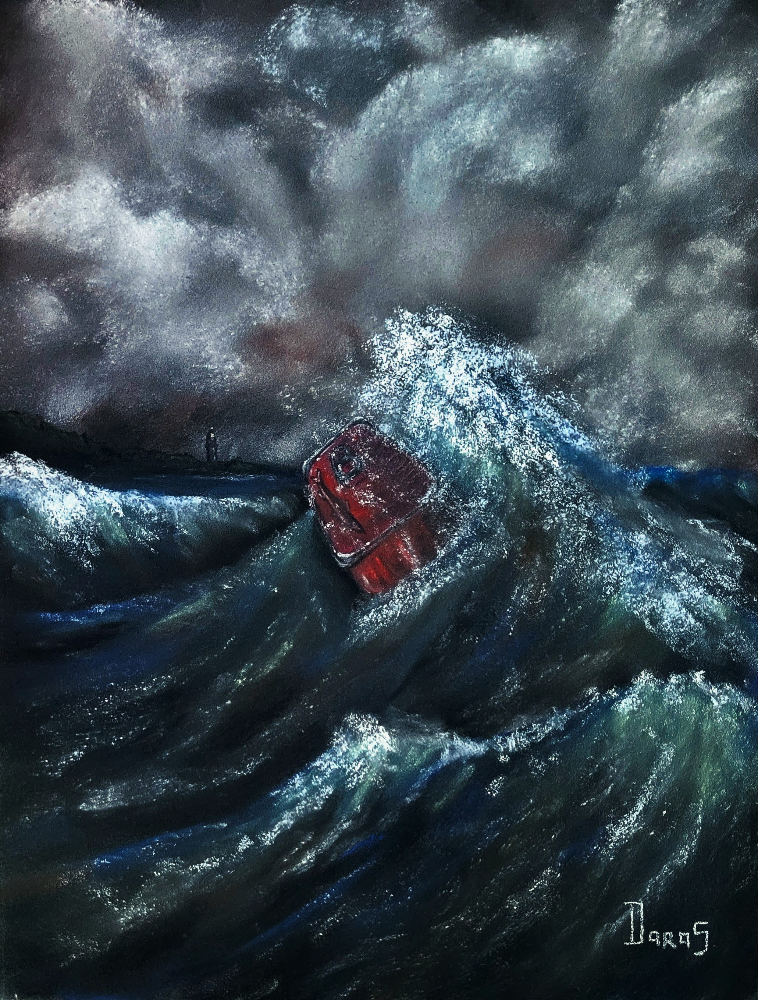

Série limitée · Marine · Imaginaire
Immersion
Triptyque : Le Silence des ondes
Deuxième volet du triptyque Le silence des ondes, cette œuvre met en scène une simple boîte de sardines emportée par une mer déchaînée. Face à l'immensité des éléments, je m'interroge sur la condition humaine, ballotée entre les forces qui la dépassent et l'illusion de maîtriser son destin.
Demander des informations →← Retour à la galerie